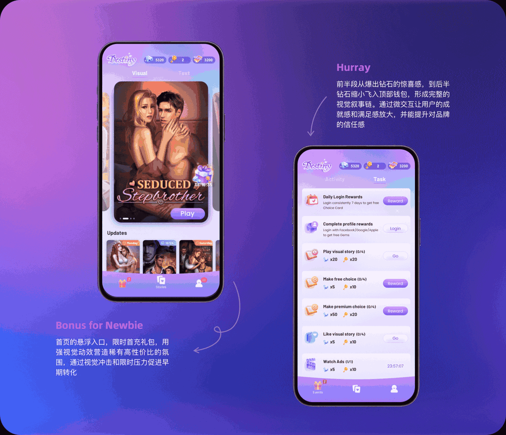

01 / MOTION
AI 礼物动画系列
4 款社交直播礼物动画，覆盖梦幻、浪漫、幸运和高价值出行主题。
UI & Visual Design / AI Agent Workflow / Generative Design
AI 提升效率、拓展创意，设计判断决定最终价值。
INDEX / SELECTED WORKS
围绕社交直播、视觉小说和运营转化场景，展示 AI 辅助下的视觉生成、动态设计和后期交付。
4 款社交直播礼物动画，覆盖梦幻、浪漫、幸运和高价值出行主题。
同一组礼物主题下的霓虹软糖、通透水晶、暗夜珠宝三种方向。

通过钻石奖励、礼包入口和页面反馈，引导新用户关注首充权益。
判断任务状态、协作深度和约束保护。
将协作规则写入全局 AGENTS.md，让 Codex 更适应复杂任务。
产品图 / 卖点 / 参考详情页 / PSD
输入产品图、卖点和参考详情页，生成详情页长图与可编辑 PSD。
脚踏板 / 网片 / 立杆 / 桁架 / 翻板
将工程规则拆成六阶段，并输出可独立运行的 Visual LISP 工具。
CASE 01 / MOTION GIFT
4 款社交直播礼物动画，覆盖梦幻、浪漫、幸运、高价值出行等主题，单条时长约 7-10 秒。
CASE 02 / ICON SYSTEM
围绕同一组礼物主题，探索 3 套不同风格的 Icon 方案，用于验证不同产品氛围下的礼物视觉方向。
CASE 03 / OPERATION MOTION
为视觉小说产品设计首充礼包动效，通过钻石奖励、礼包入口和页面反馈，引导新用户关注首充权益。
SCREENSHOT ARCHIVE / WORKFLOW EVIDENCE
工作流用截图证明，文字只解释关键判断。截图在页面中做统一裁切，点击可查看完整原图。
先与 ChatGPT 讨论协作逻辑，通过开放区、隐藏区、盲区、未知区判断任务信息是否充分。
AI COLLAB MODE
将 AI 协作方式写入全局 AGENTS.md，让 Codex 根据任务状态选择合适的回应方式，而不是所有任务都用同一种模式。
# AI Collab Mode
Core Goal:
- clarify real needs
- make better judgments
- avoid blind spots
- preserve constraints
- turn vague ideas into executable systems
Main Rules:
1. Judge the information state.
2. Choose the right collaboration depth.
3. Route by task type.
4. Protect confirmed constraints.
5. Keep Skills for task-specific workflows.
6. Run a quality gate before responding.输入产品图、商品卖点和参考详情页后，生成完整运动鞋详情页长图，并输出可编辑 PSD 源文件，支持后续继续修改文案、版式和局部素材。
SPORTS SHOE DETAIL PAGE
将运动鞋详情页的生成流程沉淀成可复用 Skill：从模糊想法、需求确认、Skill 初稿，到真实项目迭代、长图输出、PSD 分层交付和最终规则沉淀。
重点不是一次性出图，而是把“参考分析、卖点规划、分屏生成、长图合成、PSD 微调”变成可重复调用的生产流程。
从准备阶段到翻板铺设，工程通道结构被逐步生成，最终形成完整的 CAD 自动布设结果。
CODEX × AUTOCAD
将脚手架工程通道的人工布设流程拆解为 6 个可验证阶段，并通过 Codex 辅助转译为 AutoCAD 可独立运行的 Visual LISP 工具。
重点是把实际工程规则转成可执行、可验证、可复用的工具，而不只是生成代码。
TOOLS / RECENTLY USED
最近一周主要使用 Codex、Gemini 和 Lovart。最常用的是 Codex，因为它贯穿我的日常设计流程：从资讯收集、灵感采集、项目梳理和需求补充，到设计图生成、PSD 可编辑文件输出，再到将有效流程提炼成可复用方法。
ABOUT / CONTACT
10 年以上 UI 与视觉设计经验，主导或参与语音直播、海内外社交、视觉小说等项目，具备从 0 到 1 构建设计体系及多项目管理经验。
熟悉移动端、PC 端产品、运营活动、品牌 H5、礼物动画等设计场景。掌握 Sketch、Photoshop、Illustrator、After Effects、C4D、Blender 等设计工具。
目前已将 Codex、Gemini 等 AI 工具融入日常设计流程，覆盖灵感采集、需求梳理、视觉探索、设计交付和工作流沉淀。
我认为 AI 用于提升效率、拓展创意；设计的核心仍然是审美判断、用户体验，以及对产品表达和商业价值的把控。
生命不息，学习不止。